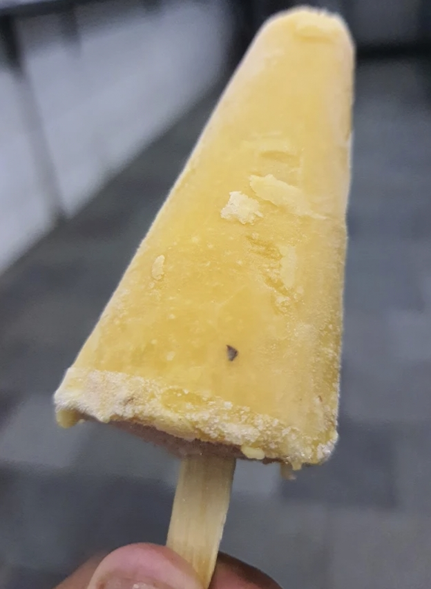

Kulfi

Description
Ingredients
- 1 ¼ cups evaporated milk
- 1 ¼ cups sweetened condensed milk
- 1 (16 ounce) container frozen whipped topping, thawed
- 4 slices white bread, torn into pieces
- ½ teaspoon ground cardamom
Steps
- Gather all ingredients
- Combine evaporated milk, condensed milk, and whipped topping in a blender and blend in pieces of bread until smooth.
- Pour mixture into a 9x13-inch baking dish or two plastic ice cube trays, sprinkle with cardamom.
- Freeze for 8 hours or overnight.
- Enjoy!
Home